แพทช์ 26 พ.ย. 2569
build 20261126-072042 · ประกาศ 26 พ.ย. 14:26 · ตัวเลขคลาส 2 เทียบกับไฟล์เกมรอบก่อน (build 20261120-112144) · คลาส 2 เปลี่ยนเยอะกว่าที่ประกาศ ดูหัวข้อคลาส 2
ประภาคาร Tidewatch Beacon ใหม่
ทั้งเซิร์ฟช่วยกันบริจาค Gold สร้างประภาคาร 10 ชั้น กลางเมือง Crown of Tides
- สร้างเสร็จแต่ละชั้น ทั้งเซิร์ฟได้บัฟ EXP + Gathering EXP 3 วัน
- ผู้บริจาครวม Top 5 ได้รูปปั้นรอบประภาคาร
| ยอดบริจาคในชั้น | รางวัล |
|---|---|
| 100M | ฉายา |
| 500M | กรอบป้ายชื่อ |
| 1B | สกินดาเมจ Tidewatch |
| 5B–25B | แฟชั่นประจำชั้น (10 ชิ้น · ไม่ขายในร้าน) |
Guild War ใหม่ & Guild
- ประกาศสงครามฟรี · ท้าได้หลาย Guild · อีกฝ่ายต้องกดรับ
- ตีกันได้ทุกเวลานอกเมือง · จบเมื่อฝ่ายใดฝ่ายหนึ่งยอมแพ้ · ไม่มี Rank และไม่มีรางวัล
- รีเซ็ตสงครามแบบเก่า และคืนค่าประกาศเข้ากองทุน Guild
- Leader เปลี่ยนชื่อ Guild ได้ ใช้ 10M จากกองทุน
- เปิด / ปิดป้าย KILL และ Guild Kill Feed ได้ในตั้งค่า · ช่วยตีผู้เล่นที่ตายได้ป้าย ASSIST
EXP & แมพ
- ทวีปเก่า: มอนธรรมดาเยอะขึ้น 30% · ตัวละครต่ำกว่า Lv 99 ได้ EXP / Job EXP ×3
- Kelpgate Locks: มอนธรรมดาเกิดเร็วขึ้น 2 เท่า (จุดฟาร์ม Lock Keeper)
- หน้า Smith และ Stats บอกพลังผนึกที่ต้องมีของแมพตะวันตก
Raid ยากขึ้น
- ยา HP ใช้ได้ทุก 12 วิ · บอส HP เพิ่ม · ท่าบอสแรงขึ้น 25% · ต้องมีฮีลเลอร์
- ปาร์ตี้ด้วยไอดีเกมเข้า Raid ได้
- Portal Raid ย้ายออกห่างทางออกในทั้ง 6 เมือง · Portal ห้องฝึก / ลานประลอง / Raid เรียงเป็นแถวทุกเมือง · Portal Raid สีม่วง
คลาส 2 ทุกสายมีการเปลี่ยนแปลง
สรุปจากไฟล์เกม (ส่วนใหญ่ไม่ได้อยู่ในประกาศ):
- ข้อความ Mastery ของทุกสายถูกเอาออก · สายใหม่ยังมีค่าโบนัสเดิมอยู่ในไฟล์ (บางสายเปลี่ยนตัวเลข ดูด้านล่าง) · สายสืบทอดไม่มีค่าโบนัสในไฟล์
- Trait และ Combo Link หลายอันเปลี่ยนเป็นค่าตายตัว เช่น "สกิลถัดไปแรงขึ้น 12–20%" หรือ "รับดาเมจลดลง 45% นาน 0.4 วิ" แทนผลแบบมีเงื่อนไข
- ความสามารถติดตัวที่ให้ดาเมจฟรีถูกตัด เช่น Duelist ตีเป้าเดี่ยว +40% · Trapper ยืนในเขตกับดัก +25% · Spellbreaker วาร์ปทุกสกิล
- Passive DEF ทุกตัวเปลี่ยนจาก % เป็นค่าคงที่ต่อเลเวล · Passive "+1 ทุก 2 เลเวล" เปลี่ยนเป็น "+1 ที่ Lv 1, 3, 5"
- ประกาศ: Clarity ไม่รีเซ็ตอัลติคลาส 2 · ฆ่ามอนไม่ลดคูลดาวน์อัลติคลาส 2 ทุกทาง · Warpath ลดคูลดาวน์ได้ไม่เกิน 30% · Resurrection Dawn ชุบได้ไกล 11 ช่อง
Reaper: ประกาศว่า "คูลดาวน์สั้นลง 20% ตีมอนแรงขึ้น 20%" · ในไฟล์เกมคูลดาวน์ −20% แต่ดาเมจต่อครั้งก็ −20% ด้วย (ดาเมจต่อวิของแต่ละสกิลเท่าเดิม) · สูตรเปลี่ยนเป็น ATK ครึ่ง + MATK ครึ่ง · ส่วน "+20% ใส่มอน" ไม่เห็นในไฟล์ฝั่งเรา
AegisKnight · สายสืบทอด
ดูสกิลทั้งหมด →✦
ความสามารถติดตัว · Aegis Plate
โล่ Bulwark เก็บได้มากขึ้น 100% · ส่วนเกินกลายเป็น แผ่นเกราะทอง กันได้ทั้งฮิต · ทุกครั้งที่กัน ปล่อยคลื่นโล่ 300% รอบตัว→ โล่ Bulwark จากสกิลเก็บได้มากขึ้น 100%
✦
สาย Lionheartสายย่อย
- Trait Pride:
โล่เต็ม → สกิลสายนี้แรงขึ้น 30%→ มีโล่อยู่ → ทุกสกิลแรงขึ้น 30%
✦
สาย Sanctumสายย่อย
- Trait Iron Sanctum:
ยืนนิ่ง 1 วิ ได้โล่ 1 ชั้นทุกวิ→ ยืนนิ่ง 1 วิ ระหว่างต่อสู้ ได้โล่ 2% HP ทุกวิ (สะสมได้ถึง 10%) - Trait Moving Fortress:
เดินเร็ว +15% · ชนมอนได้โล่→ เดินเร็ว +15% · ทุกครั้งที่ใช้ Dash ได้โล่ 2% HP (สะสมได้ถึง 10%)
✦
สาย Halo Guardสายย่อย
- Trait Shared Oath:
โล่ที่ได้ แบ่ง 30% ให้เพื่อนใกล้ตัว→ สกิลที่ให้โล่ ให้เพื่อนในปาร์ตี้ใกล้ตัวได้โล่ 30% ของโล่นั้นด้วย นาน 6 วิ - Trait Holy Bulwark:
สกิลสาย Halo Guard เป็นเวทแสง (MATK) · โล่ Bulwark ที่แตก ระเบิดเป็นแสงรอบตัว คิดจาก MATK→ สกิลสาย Halo Guard เป็นเวทแสง (MATK) · ตีซ้ำอีกครั้ง (เบากว่า)
✦
Combo Link
- ⚡ รัว · ก่อกำแพง:
สกิลถัดไปเติมโล่ Bulwark 1 ชั้น (ไม่เกินเพดานโล่)→ สกิลถัดไปให้โล่ 3% HP นาน 4 วิ - 💨 พุ่ง · ตั้งรับ:
สกิลถัดไปบล็อกการโจมตีครั้งถัดไป 1 ครั้ง→ ใช้สกิลถัดไปแล้วรับดาเมจลดลง 40% นาน 2.5 วิ - 🔒 ปิด · แบ่งโล่:
สกิลถัดไปแบ่งโล่ Bulwark ที่มีอยู่ให้เพื่อนใกล้ตัว 20% นาน 3 วิ→ ใช้สกิลถัดไปแล้วคุณและปาร์ตี้ใกล้ตัวรับดาเมจลดลง 15% นาน 3 วิ
SpellbreakerKnight · สายใหม่
ดูสกิลทั้งหมด →✦
ความสามารถติดตัว · Rift Step
ไม่ถือโล่ · ทุกสกิลวาร์ปไปโผล่ข้างเป้า ไม่ต้องเดินเข้าหา · หลังโผล่ไม่โดนดาเมจ 0.4 วิ (เกิดได้ 1 ครั้งทุก 3 วิ) · เลิกเก็บโล่ Bulwark → ได้ Null Charge แทน (สูงสุด 5) ต่อ Charge ดาเมจ +12% · ทุกการตีลบบัฟและโล่ของเป้า→ สกิลดาบพุ่งเข้าหาเป้าเอง (Rune Splitter, Null Lunge, Crystal Tempest, Mirror Riposte) · ได้ Null Charge (สูงสุด 5) ต่อ Charge ดาเมจ +12% · ทุกการตีลบบัฟของมอน
✦
สาย Nullbladeสายย่อย
- Trait Runic Edge:
ตีปกติคิดจาก ATK + MATK เหมือนสกิลสาย Nullblade · ส่วน ATK ติดคริ ส่วน MATK ได้ Spell Amp→ ตีธรรมดาใส่มอนสเตอร์แรงขึ้น 25%
✦
สาย Riftwardสายย่อย
- Trait Mana Drain:
มอนในรอยแยกคูลดาวน์ช้าลงอีก 30%→ มอนที่โดนสกิลสายนี้ตีเบาลง 30% นาน 2 วิ
✦
สาย Reflectสายย่อย
- Trait Prism Skin:
สะท้อนดาเมจเวท 30% และดาเมจกายภาพ 15% กลับไปหาคนตี→ หลังใช้สกิลคลาส 2 สะท้อนดาเมจที่รับ 20% กลับไปหาคนตี นาน 15 วิ - Trait Mana Armor:
ใช้ MP แทน HP 20%→ หลังใช้สกิลคลาส 2 ดาเมจที่รับ 20% หักจาก MP แทน HP นาน 15 วิ
✦
Combo Link
- 🔓 เปิด · ลบซ้ำ:
สกิลถัดไปลบบัฟเพิ่มอีก 1 อันต่อเป้า→ มอนที่โดนสกิลถัดไปตีเบาลง 15% นาน 2 วิ - 💨 พุ่ง · ลอบหลัง:
สกิลถัดไปนับว่าตีจากด้านหลัง เจาะ DEF 15%→ สกิลถัดไปแรงขึ้น 5% ใส่มอนสเตอร์
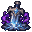
Antimagic Breaker
- ฟาดลงจุดที่เล็ง (เดิมกระโดดเข้าหาเป้า)
Hardened Will
- DEF
+4% ต่อเลเวล→ +16 ต่อเลเวล
Null Steel
- คำอธิบายบอกชัดว่าบวกจากฐาน 12% ต่อ Charge (ตัวเลขเท่าเดิม)
✦
ความสามารถติดตัว · Bloodboil
เพดาน Rage +100% (10 → 20) · Rage เต็มแล้ว ท่าที่ใช้ Rage ถัดไปกลายเป็น Overheat แรงขึ้น 100% วงใหญ่ขึ้น 2 เท่า→ เพดาน Rage +100% (10 → 20) · Rage เต็มแล้ว ท่าที่ใช้ Rage ถัดไปกลายเป็น Overheat แรงขึ้น 100%
✦
สาย Warlordสายย่อย
- Trait Warpath:
ฆ่ามอน 1 ตัว คูลดาวน์สกิลสายนี้ลด 0.5 วิ (รวมทุกทางไม่เกิน 30%)→ ฆ่ามอน 1 ตัว คูลดาวน์ทุกสกิลที่กำลังนับลด 0.5 วิ (ครั้งละไม่เกิน 30% ของสกิลนั้น) · ไม่ลดสกิลที่กันตาย
✦
สาย Butcherสายย่อย
- Trait Red Mist:
ใช้ Rage ครบ 20 คูลดาวน์ลด 2 วิ (รวมทุกทางไม่เกิน 30%)→ ใช้ท่าที่ใช้ Rage ตอน Rage เต็ม คูลดาวน์ท่านั้นลด 2 วิ (ไม่เกิน 30% ของคูลดาวน์)
✦
สาย Ironbloodสายย่อย
- Trait Second Heart:
เลือดหมด → รอด 1 ครั้ง ทุก 3 นาที→ โดนตีตอนเลือดต่ำกว่า 30% → เลือดไม่ลดต่ำกว่า 1 นาน 2.5 วิ และฮีล 20% HP · ทุก 3 นาที - Trait Blood Price:
เสีย HP ทุก 5% ได้ Rage +3 · เลือดต่ำกว่า 50% ดาเมจเพิ่ม 15%→ เลือดต่ำกว่า 50% ทุกสกิลแรงขึ้น 15%
✦
Combo Link
- 💨 พุ่ง · ถาโถม:
สกิลถัดไปผลักมอนล้ม 0.5 วิ→ สกิลถัดไปสตัน 0.5 วิ
Undying Fury
- Evo A Long Fury:
ระเบิด +40%→ ระเบิดแล้วฮีลตัวเอง 15% HP · ระเบิด +20%
DuelistWarrior · สายใหม่
ดูสกิลทั้งหมด →✦
ความสามารถติดตัว · Perfect Form
เลิกใช้ Rage → ได้ Focus จากการคริและการหลบ (สูงสุด 10) · ต่อ Focus คริ +5% สปีดตี +5% · โดนตีจน HP ลด เสีย Focus ครึ่งหนึ่ง (หลบได้หรือโล่รับไว้ไม่นับ) · ตีเป้าเดี่ยวแรงขึ้น 40%→ ได้ Focus จากการตีธรรมดาทุก 2 ครั้งและจากสกิลที่เก็บ Focus (สูงสุด 10) · ต่อ Focus คริ +5% สปีดตี +5% · โดนตีจน HP ลด เสีย Focus ครึ่งหนึ่ง (หลบได้หรือโล่รับไว้ไม่นับ)
✦
สาย Rapierสายย่อย
- Trait Rhythm:
ตีติดกัน 10 ฮิต ได้ Focus +1→ สกิลโดนครบทุก 10 ฮิต ได้ Focus +1 - Trait Precision:
ไม่คริอีกเลย แต่ทุกฮิตแรงเท่าคริครึ่งหนึ่ง · ดาเมจนิ่ง ไม่ต้องลุ้น→ ดาเมจทุกฮิตใส่มอนสเตอร์ +20%
✦
สาย Counterstanceสายย่อย
- Trait Flow:
หลบ 3 ครั้งติด ได้ Focus เต็ม→ ทุกครั้งที่ใช้ Dash ได้ Focus +3 - Trait Parry Guard:
หลบสำเร็จได้โล่ 5% HP→ ทุกครั้งที่ใช้ Dash ได้โล่ 5% HP นาน 4 วิ
✦
สาย Execution Lineสายย่อย
- Mastery: ATK +5% → ATK +17%
- Trait Single Out:
เป้าเดี่ยวแรงขึ้นอีก 20%→ สกิลของสายนี้แรงขึ้น 20%
✦
Combo Link
- 🔓 เปิด · ชี้เป้า:
ฮิตแรกของสกิลถัดไปคริแน่นอน→ สกิลถัดไปแรงขึ้น 12% - 💨 พุ่ง · เหลี่ยม:
สกิลถัดไปหลบการโจมตีได้ 0.4 วิระหว่างออกท่า→ ใช้สกิลถัดไปแล้วรับดาเมจลดลง 45% นาน 0.4 วิ - 🔒 ปิด · ประชัน:
สกิลถัดไปแรงขึ้น 15% กับเป้าที่เลือดเกินครึ่ง→ สกิลถัดไปแรงขึ้น 15%
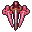
Mirror Blades
- Evo A Three Mirrors:
แรง 60% · 8 วิ→ แรง 65% · อยู่ 12 วิ (Sharp Mirror 70% · 8 วิ เท่าเดิม)
Steel Focus
- Focus สูงสุด
+1 ทุก 2 เลเวล→ +1 ที่ Lv 1, 3 และ 5
MarkbowScout · สายสืบทอด
ดูสกิลทั้งหมด →✦
ความสามารถติดตัว · Apex Mark
Hunter's Mark สูงสุด 3 → 6 · ครบ 6 = Apex ทั้งปาร์ตี้ตีเป้านี้แรงขึ้น 30% · เป้าตาย Mark กระโดดไปตัวที่ใกล้สุด→ Hunter's Mark สูงสุด 3 → 6 · ครบ 6 = Apex เป้ารับดาเมจเพิ่ม 30% จากทุกคน นาน 5 วิ
✦
สาย Deadeyeสายย่อย
- Trait Still Breath:
ยืนนิ่ง 1 วิ ลูกถัดไปยิงทะลุทุกตัวในแนว→ ยืนนิ่ง 1 วิ สกิลที่ใช้แรงขึ้น 25% - Trait Headhunter:
เป้าติด Apex โดนคริแรงขึ้น 40%→ คุณตีมอนที่ติด Mark เต็มแรงขึ้น 40%
✦
สาย Volleyสายย่อย
- Trait Mark Storm:
ยิงกระจายติด Mark 2 เท่า→ Mark จากสกิลสายนี้แรงชั้นละ 6%
✦
สาย Rangerสายย่อย
- Trait Kite:
ยิงขณะเดิน ไม่ช้าลง→ ใช้สกิลแล้วเดินต่อได้ทันที - Trait Camouflage:
ไม่ยิง 2 วิ → ล่องหน · ลูกแรกหลังล่องหนคริแน่นอน→ ไม่ใช้สกิล 2 วิ → สกิลคลาส 2 หรือร่าง II ถัดไปคริแน่นอน
✦
Combo Link
- ⚡ รัว · ทะลุ:
สกิลถัดไปทะลุไปโดนตัวหลังอีก 1 ตัว→ สกิลยิงถัดไปทะลุมอน - 💨 พุ่ง · มุมยิง:
สกิลถัดไปยิงไกลขึ้น 2 ช่องและไม่พลาด→ สกิลถัดไปยิงไกลขึ้น 25% - 🔒 ปิด · ย้าย Mark:
ถ้าสกิลถัดไปฆ่าเป้าได้ Mark ย้ายไปตัวที่ใกล้สุด→ สกิลถัดไปแรงขึ้น 8%
Ricochet
- ลูกที่เด้ง
ไม่ลดแรง→ เบาลงทุกครั้งที่เด้ง
TrapperScout · สายใหม่
ดูสกิลทั้งหมด →✦
ความสามารถติดตัว · Hunting Ground
ทุกสกิลวาง กับดัก ลงพื้น (สูงสุด 8) · มอนเหยียบ = ระเบิด 500% + รัด 1 วิ + ติด Mark · ยืนในเขตกับดักแรงขึ้น 25%→ ทุกสกิลคลาส 2 วาง กับดัก ลงพื้น (สูงสุด 8) · มอนเหยียบ = ระเบิด 500% + รัด 1 วิ + ติด Mark
✦
สาย Demolitionสายย่อย
- Trait Chain Reaction:
กับดักระเบิดต่อกันเป็นลูกโซ่→ วงระเบิดของกับดักกว้างขึ้น 60% - Trait Rune Link:
กับดักสาย Demolition ระเบิดใกล้กันส่งต่อเป็นลูกโซ่→ กับดักระเบิด → กับดักลูกอื่นของคุณที่อยู่ในวงระเบิดตามทันที (ลูกโซ่)
✦
สาย Siegeสายย่อย
- Mastery: ไม่มี → ATK +8%
- Trait Turret Nest:
วางป้อมได้ 3 ป้อม→ ป้อมชนิดเดียวกันวางได้ 3 ป้อม - Trait Overdrive:
ป้อมยิงเร็วขึ้น 40% แต่อยู่ 6 วิ→ ป้อมที่เพิ่งวางยิงเร็วขึ้น 40% ใน 6 วิแรก
✦
สาย Snareสายย่อย
- Trait Tripwire:
มอนเดินผ่านเส้นกับดักติด Mark +2→ กับดักระเบิดติด Mark เพิ่มอีก 2 ชั้น
✦
Combo Link
- 🔓 เปิด · ติดกับ:
สกิลถัดไปตีมอนที่ติดกับดักอยู่แรงขึ้น 20%→ สกิลถัดไปแรงขึ้น 20% - ⚡ รัว · ป้อนกระสุน:
เครื่องจักรที่วางอยู่ยิงเพิ่มทันที 1 นัด→ สกิลถัดไปวางกับดักเพิ่ม 1 อัน - 🔒 ปิด · ซ่อมเครื่อง:
เครื่องจักรที่วางอยู่ทำงานต่ออีก 2 วิ (เครื่องละไม่เกิน +6 วิ)→ สกิลถัดไปวางกับดักเพิ่ม 1 อัน
Killing Field
- ดาเมจ
เวท (MATK)→ กายภาพ (ATK)
Tinkerer
- กับดักสูงสุด
+1 ทุก 2 เลเวล→ +1 ที่ Lv 1, 3 และ 5
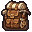
Pack Mule
- DEF
+2% ต่อเลเวล→ +8 ต่อเลเวล
✦
ความสามารถติดตัว · Nightfall
Combo สูงสุด 5 → 8 · ครบ 8 เข้า Dusk 4 วิ: ล่องหน (มอนที่เล็งคุณอยู่แล้วยังตีได้ ไม่นับเป็นอมตะ) ทุกฮิตคริ ดาเมจ +50%→ Combo สูงสุด 5 → 8 · ครบ 8 แล้วตีโดน เข้า Dusk 4 วิ: ดาเมจ +50% (เกิดได้ทุก 8 วิ)
✦
สาย Shadeสายย่อย
- Trait Legion of Shade:
ร่างเงาสูงสุด +1→ ร่างเงาตีซ้ำแรงขึ้นอีก 20% - Trait Shade Swap:
สลับที่กับร่างเงาได้ · จุดที่สลับทั้งสองจุดระเบิด 200% รอบตัว→ สกิลสายนี้ตีซ้ำอีกครั้ง (เบากว่า)
✦
สาย Veilสายย่อย
- Trait Smokewalker:
ระหว่างล่องหน เดินทะลุมอนได้ · มอนที่เดินผ่านโดนดาเมจ 150% (ตัวละ 1 ครั้งต่อการล่องหน)→ ใช้สกิลสายนี้แล้วเดินเร็วขึ้น 25% นาน 2.5 วิ - Trait Ambush:
ออกจากล่องหน ฮิตแรกแรงขึ้น 100%→ ไม่ใช้สกิล 2.5 วิ → สกิลถัดไปแรงขึ้น 100%
✦
Combo Link
- 🔓 เปิด · มืดบอด:
สกิลถัดไปคริแน่นอนกับเป้าที่ติดคุมอยู่→ สกิลถัดไปแรงขึ้น 30% ใส่มอนที่ติดสตัน ตรึง หรือช้า - 💨 พุ่ง · ลอบ:
สกิลถัดไปนับว่าตีจากเงา ได้โบนัสลอบโจมตี→ สกิลถัดไปแรงขึ้น 15% - 🔒 ปิด · กลืนเงา:
หลังสกิลถัดไป มอนเลิกเล็งคุณ 0.5 วิ→ ใช้สกิลถัดไปแล้วรับดาเมจลดลง 45% นาน 0.5 วิ
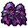
Shade Clone
- Evo A Three Shades:
แรง 60% · 8 วิ→ แรง 65% · อยู่ 12 วิ
VenombladeRogue · สายใหม่
ดูสกิลทั้งหมด →✦
ความสามารถติดตัว · Toxic Doctrine
Combo กลายเป็น พิษ ติดบนตัวมอน (สูงสุด 10 สแตก อยู่ 8 วิ ใส่พิษเพิ่มเมื่อไหร่ สแตกเดิมต่ออายุทั้งหมด) · ต่อสแตก พิษ 60% ทุกวิ · พิษทะลุเกราะ แต่ไม่คริ · มอนที่ตายขณะติดพิษ ส่งพิษครึ่งหนึ่งไปตัวที่ใกล้ที่สุด ไม่ต้องยืนตีจนตาย→ ตีแล้วติด พิษ บนตัวมอน (สูงสุด 10 สแตก อยู่ 8 วิ ใส่พิษเพิ่มเมื่อไหร่ สแตกเดิมต่ออายุทั้งหมด) · ต่อสแตก พิษ 60% ทุกวิ · พิษทะลุเกราะ แต่ไม่คริ · มอนที่ตายขณะติดพิษ ส่งพิษครึ่งหนึ่งไปตัวที่ใกล้ที่สุด ไม่ต้องยืนตีจนตาย
✦
สาย Venomcraftสายย่อย
- Trait Quick Venom:
ทุกฮิตได้พิษ +1→ ฮิตของสกิลคลาส 2 ใส่พิษเพิ่ม +1
✦
สาย Plagueสายย่อย
- Trait Alchemist:
พิษทุกชนิดของคุณ (รวมสาย Toxin) ติดคริได้ ตามโอกาสคริของคุณ · ตีเร็วด้วย AGI เพื่อซ้อนพิษ→ พิษทุกชนิดของคุณ (รวมสาย Venomcraft) ติดคริได้ ตามโอกาสคริของคุณ · ตีเร็วด้วย AGI เพื่อซ้อนพิษ
Cold Blood
- DEF
+3% ต่อเลเวล→ +12 ต่อเลเวล
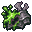
Acid Splash
- วงกรดไม่ตามตัวแล้ว อยู่กับที่
ScribeMage · สายสืบทอด
ดูสกิลทั้งหมด →✦
ความสามารถติดตัว · Living Grimoire
คัมภีร์ลอยข้างตัวจดทุกสกิลที่ร่าย · ครบ 5 หน้า = ร่ายสกิลล่าสุดซ้ำฟรี แรงเต็ม (ครั้งที่ร่ายซ้ำไม่จดหน้า · ร่ายซ้ำ Finisher ไม่ได้) · ปัก Spirit Rune ได้เพิ่ม 2 อัน→ คัมภีร์ลอยข้างตัวจดสกิลคลาส 2 และสกิลร่าง II ที่ร่าย (ไม่นับบัฟ) · ครบ 5 หน้า = ร่ายสกิลล่าสุดซ้ำฟรี แรงเต็ม (ครั้งที่ร่ายซ้ำไม่จดหน้า · ร่ายซ้ำ Finisher ไม่ได้)
✦
สาย Frostscriptสายย่อย
- Trait Deep Freeze:
แช่แข็งนานขึ้น 1 วิ→ ตรึงของสกิลสายนี้นานขึ้น 40% · ทุกสกิลสายนี้ติด Chill 2 - Trait Brittle:
Shatter แรงขึ้นอีก 40%→ Shatter ของสกิลสายนี้แรงขึ้น 40%
✦
Combo Link
- 🔓 เปิด · ตรึงอักขระ:
สกิลถัดไปวางรูนใต้เป้าที่ติดคุมอยู่→ สกิลถัดไปติด Chill 1
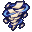
Page Storm
- พายุ
หมุนรอบตัว (ตามตัว)→ ลงตรงจุดที่เล็ง วง 5 ช่อง
Absolute Zero
ลามใต้ฝูงมอน ทุกตัวแข็งแล้ว Shatter พร้อมกัน→ ลามรอบตัวคุณ · แช่แข็งทุกตัว · ตัวที่แข็งอยู่แล้วโดน Shatter
StormcallerMage · สายใหม่
ดูสกิลทั้งหมด →✦
ความสามารถติดตัว · Storm Body
ทุกสกิลไม่มีแถบร่าย ตัวคุณพุ่งไปเอง · ค่าร่ายเร็วที่ไม่ได้ใช้กลายเป็นเกราะ: ร่ายเร็ว 1% = รับดาเมจลด 1% (สูงสุด 30%) · Chill กลายเป็น Static ครบ 5 = ฟ้าผ่า 1,500% กระโดด 1 เป้า→ ทุกสกิลคลาส 2 ไม่มีแถบร่าย · ค่าร่ายเร็วที่ไม่ได้ใช้กลายเป็นเกราะ: ร่ายเร็ว 1% = รับดาเมจลด 1% (สูงสุด 30%) · Chill กลายเป็น Static ครบ 5 = ฟ้าผ่า 1,500% กระโดด 1 เป้า
✦
สาย Tempestสายย่อย
- Trait Storm Weave:
ตีปกติทุกครั้งปล่อย Static กระโดด 2 ตัว · ดาเมจสกิล Finisher ลด 15%→ ตีธรรมดาใส่ Static +1 ให้มอนใกล้เป้าอีก 2 ตัว
✦
สาย Thunderสายย่อย
- Trait Supercell:
ฟ้าผ่าใหญ่ขึ้น 40%→ ฟ้าผ่าแรงขึ้น 40%
✦
Combo Link
- 🔓 เปิด · นำไฟ:
สายฟ้าของสกิลถัดไปกระโดดไปทุกตัวที่ติดคุมอยู่ (สูงสุด 5 ตัว)→ สกิลถัดไปแรงขึ้น 15% - 💨 พุ่ง · แรงเฉื่อย:
สกิลถัดไปพาตัวไปไกลขึ้น 2 ช่อง และทิ้งรอยไฟฟ้าตามทาง→ สกิลพุ่งถัดไปไปไกลขึ้น 30%
Gale Kick
เตะทะลุทั้งแนว→ พุ่งถึงเป้าแล้วตีรอบจุดที่ลง · Evo Spin Kick: วงที่ลงกว้าง 2 เท่า
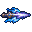
Rail Dash
พุ่งทะลุทั้งแนว→ พุ่งถึงเป้าแล้วตีรอบจุดที่ลง · ร่องหลอมเผาตามทาง
Tempest Wall
วิ่งวนรอบฝูง→ ลมหมุนรอบตัวคุณ 4 วิ ดูดมอนเข้าหาตัว
Cyclone Step
พุ่งทะลุมอน→ พุ่งไปตีมอนรอบจุดที่ลง
Bolt Step
กลายร่างเป็นสายฟ้าพุ่งเข้าหา→ ยิงสายฟ้า (ตัวไม่พุ่ง)
Arc Leash
- ไม่พุ่งเข้ากลางฝูงแล้ว
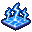
Ground Zero
- ไม่กระโดดลงกลางฝูงแล้ว
Static Skin
- DEF
+2% ต่อเลเวล→ +8 ต่อเลเวล
DawnAcolyte · สายสืบทอด
ดูสกิลทั้งหมด →✦
ความสามารถติดตัว · Morning Light
Atonement ฮีลทุกคนในปาร์ตี้พร้อมกัน · ฮีลล้นกลายเป็น โล่แสง · ปาร์ตี้ใกล้ตัวตีแรงขึ้น 15%→ ใช้สกิลแล้วเพื่อนในปาร์ตี้ใกล้ตัวตีแรงขึ้น 15% นาน 6 วิ
✦
สาย Sunlightสายย่อย
- Trait Solar Flare:
คริแสงฮีลเพิ่ม 2 เท่า→ สกิลสายนี้ฮีลจากดาเมจ 30% - Trait Noon:
กลางวัน สกิลแสงทิ้งวงแดดที่ฮีลเพื่อน · กลางคืนไม่ทิ้ง→ สกิลสายนี้ทิ้งวงแสง 3 วิ ฮีลคนในวง 1% HP ทุกวิ
✦
สาย Graceสายย่อย
- Trait Overflowing Grace:
โล่แสงสูงสุด 2 เท่า→ สกิลสายนี้ให้โล่คุณ 5% HP นาน 4 วิ · โล่ของสกิลสายนี้หนาขึ้น 2 เท่า - Trait Radiant Burst:
ฮีลที่ล้น (เลือดเต็มแล้ว) ระเบิดเป็นแสงใส่มอนรอบตัวคนนั้น · ฮีลเลอร์ฟาร์มเดี่ยวได้→ วงของสายนี้ระเบิดใส่มอนตอนจบ · สกิลอื่นตีซ้ำอีกครั้ง (เบากว่า)
✦
Combo Link
- 🔓 เปิด · แสงส่อง:
สกิลถัดไปฮีลเพื่อนที่เลือดน้อยสุด 3% HP→ สกิลถัดไปฮีลคุณและปาร์ตี้ใกล้ตัว 3% HP - ⚡ รัว · ขับขาน:
ฮีลของสกิลถัดไปทำงานต่ออีก 2 วิ→ สกิลถัดไปฮีลคุณและปาร์ตี้ใกล้ตัว 2% HP - 💨 พุ่ง · โฉบช่วย:
สกิลถัดไปล้างสถานะไม่ดี 1 อย่างให้เพื่อนใกล้ตัว→ สกิลถัดไปล้างสถานะไม่ดีของคุณ - 🔒 ปิด · รุ่งอรุณ:
สกิลถัดไปให้โล่แสง 4% HP แก่เพื่อน 1 คน→ สกิลถัดไปให้โล่คุณ 4% HP นาน 4 วิ
Hymn of Valor
- บัฟ
ATK/MATK +20%→ ดาเมจ +20% · Evo War HymnATK/MATK +30%→ ดาเมจ +30%
Choir of Heaven
- Evo Battle Choir
ATK/MATK +20%→ ดาเมจ +20%
InquisitorAcolyte · สายใหม่
ดูสกิลทั้งหมด →✦
ความสามารถติดตัว · Verdict
Atonement กลายเป็น บาป ติดบนมอน (สูงสุด 7) · ต่อบาป มอนรับดาเมจศักดิ์สิทธิ์ +8% · ครบ 7 = ไฟพิพากษาเผา 500% ทุกวิ · ดาเมจที่ทำฮีลตัวเอง 3%→ ตีแล้วติด บาป บนมอน (สูงสุด 7) · ต่อบาป คุณตีมอนตัวนั้นแรงขึ้น 8% · ครบ 7 = ไฟพิพากษาเผา 500% ทุกวิ · ดาเมจที่ทำฮีลตัวเอง 3%
✦
สาย Verdictสายย่อย
- Mastery: MATK +8% → MATK +20%
- Trait Swift Sentence:
ใช้บาปแล้วคืน 2→ ใช้บาปแล้วเหลือบาปไว้บนเป้า 2 - Trait Battle Priest:
ถือ Mace (ATK) แล้วตีปกติคิดจาก ATK · สกิลสาย Verdict เป็นกายภาพ · ตีปกติได้บาป +1→ สกิลสาย Verdict คิดจาก ATK แทน MATK
✦
สาย Pyreสายย่อย
- Mastery: MATK +4% → MATK +12%
- Trait Purge:
ไฟลบบัฟมอน · มอนที่ถูกลบบัฟโดนดาเมจเพิ่ม 15% นาน 5 วิ→ มอนที่โดนสกิลสายนี้รับดาเมจเพิ่ม 15% นาน 5 วิ
✦
สาย Iron Faithสายย่อย
- Trait Unshaken:
ไม่ติดสตันและล้ม→ หลังใช้สกิลคลาส 2 ไม่ติดตรึง ช้า และผลัก / ดึง นาน 15 วิ
✦
Combo Link
- ⚡ รัว · เผาบาป:
บาปบนเป้าของสกิลถัดไปเผาทันที 1 รอบ→ ถ้าบาปบนเป้าเต็ม ไฟพิพากษาเผาทันที 1 รอบ - 🔒 ปิด · ไถ่บาป:
สกิลถัดไปฮีลคุณ 2% HP ต่อบาปบนเป้า (สูงสุด 10%)→ สกิลถัดไปฮีลคุณ 5% HP
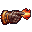
Accuse · Sentence: Hammer · Final Judgment
- ดาเมจ
กายภาพ (ATK)→ เวท (MATK)
Penance Strike · Judgment Chains · Heaven's Verdict
- ดาเมจ
ผสม ATK + MATK→ เวท (MATK) · ตัวคูณ+0.5% ต่อ STR→ +0.5% ต่อ INT
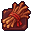
Emberheart / Martyr's Fire
- ใช้กับ "สกิลไฟ" เท่านั้น: Penance Strike · Heaven's Verdict · Holy Pyre · Brand · Fire Lash · Purifying Wave · Auto-da-fé · Martyrdom · Final Judgment
Tribunal
- บาปสูงสุด
+1 ทุก 2 เลเวล→ +1 ที่ Lv 1, 3 และ 5
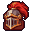
Iron Creed
- DEF
+4% ต่อเลเวล→ +16 ต่อเลเวล
Confessor
- เพดานฮีลรวมกับดูดเลือดทุกแหล่ง: ไม่เกิน 5% HP ต่อฮิต · 15% HP ต่อวิ · กับบอสได้ 1 ใน 3
✦
ความสามารถติดตัว · Shepherd's Lantern
Thrall สูงสุด 5 → 8 · Thrall ได้ HP และสเตตัส 60% ของคุณ · ฆ่า 1 ตัวได้วิญญาณ 2 ดวง→ Thrall สูงสุด 5 → 8
✦
สาย Packสายย่อย
- Trait Command:
สั่ง Thrall รุมเป้าที่คุณตี→ ใช้สกิลสายนี้ Thrall ทุกตัวตีแรงขึ้น 20% นาน 6 วิ - Trait Undying Pack:
Thrall ตายแล้วฟื้นใน 3 วิ→ ใช้สกิลสายนี้ฮีล Thrall ทุกตัว 15% HP
✦
สาย Stampedeสายย่อย
- Trait Endless Herd:
ฝูงวิ่งซ้ำ 1 รอบ 50%→ สกิลสายนี้ตีซ้ำอีกครั้ง (เบากว่า) - Trait Spirit Hooves:
ฝูงทำมอนล้ม 1 วิ→ สกิลสายนี้สตัน 1 วิ
✦
สาย Totemสายย่อย
- Trait Totem Circle:
โทเท็มวางได้ 3 อัน→ สกิลสายนี้แรงขึ้น 30% - Trait Spirit Well:
โทเท็มฮีลปาร์ตี้ 2% ทุกวิ→ World Tree Totem ฮีล 4% ทุกวิ
✦
Combo Link
- 🔓 เปิด · สั่งรุม:
Thrall ทุกตัวพุ่งตีเป้าที่ติดคุมอยู่ทันที 1 ครั้ง→ ใช้สกิลถัดไปแล้ว Thrall ทุกตัวตีแรงขึ้น 30% นาน 6 วิ - ⚡ รัว · ปลุกเร้า:
Thrall ตีเร็วขึ้น 20% นาน 3 วิ→ ใช้สกิลถัดไปแล้ว Thrall ทุกตัวตีแรงขึ้น 20% นาน 6 วิ
ReaperSummoner · สายใหม่
ดูสกิลทั้งหมด →✦
ความสามารถติดตัว · Soul Absorption
เลิกปลุก Thrall → วิญญาณเข้าตัวเอง (สูงสุด 20 ดวง) · ต่อดวง แรงขึ้น 3% สปีดตี +2% เดินเร็ว +1% · ใช้สกิลโดนเป้า +1 ดวงทุกครั้ง ไม่ต้องฆ่า (ใช้กับบอสได้) ฆ่าได้ +2 · ทุกสกิลคิดจาก ATK + MATK ค่าที่น้อยกว่านับ 2 เท่า ยิ่งผสมให้เท่ากันยิ่งแรง · ตีธรรมดาเป็นเคียวกวาด→ วิญญาณเข้าตัวเอง (สูงสุด 20 ดวง) · ต่อดวง แรงขึ้น 3% สปีดตี +2% เดินเร็ว +1% · สกิลที่เก็บวิญญาณตีโดนได้ +1 ถึง +2 ดวงต่อการใช้ 1 ครั้ง ไม่ต้องฆ่า (ใช้กับบอสได้) ฆ่าได้ +2 · ทุกสกิลคิดจาก ATK ครึ่งหนึ่ง + MATK ครึ่งหนึ่ง · ตีธรรมดาเป็นเคียวกวาด
✦
สาย Scytheสายย่อย
- Trait Grim Reaper:
ตีธรรมดาโดน 3 เป้า · หลังใช้สกิลเคลื่อนที่ ตีธรรมดาครั้งถัดไปแรง 2 เท่า→ ตีธรรมดาใส่มอนสเตอร์แรงขึ้น 50%
✦
สาย Shadowสายย่อย
- Trait Final Breath:
เป้าเลือดต่ำ 20% ตายทันที (ไม่ใช่บอส)→ ตีมอนที่เลือดต่ำกว่า 20% แรงขึ้น 20 เท่า (ไม่ใช่บอสและ Mini-boss) - Trait Soul Burn:
ใช้วิญญาณได้ดาเมจ +5% ต่อดวง→ สกิลสายนี้ที่ใช้วิญญาณ สูงสุด +160% เมื่อเต็ม
✦
สาย Dark Artsสายย่อย
- Trait Wraith Walk:
ร่างวิญญาณเดินทะลุมอน · มอนที่เดินผ่านโดนดาเมจ 150% และได้วิญญาณ 1 ดวง (ทุก 3 วิ)→ ใช้สกิลสายนี้ได้วิญญาณ +1
✦
Combo Link
- 🔓 เปิด · ลากวิญญาณ:
สกิลถัดไปดึงดวงวิญญาณ +1 จากเป้าที่ติดคุมอยู่→ สกิลถัดไปได้วิญญาณ +1 - 💨 พุ่ง · ข้ามภพ:
สกิลถัดไปทะลุตัวมอน และหลบการโจมตีได้ 0.4 วิ→ ใช้สกิลถัดไปแล้วรับดาเมจลดลง 45% นาน 0.4 วิ - 🔒 ปิด · ตะเกียง:
ดวงวิญญาณในตะเกียงฮีลคุณ 1% HP ต่อดวง (สูงสุด 5%)→ สกิลถัดไปฮีลคุณ 3% HP
Reaping Combo
- คูลดาวน์
4.2 วิ→ 3.3 วิ · ดาเมจต่อครั้ง43.1%→ 33.8% (-22%)
Shadow Rush
- คูลดาวน์
5.8 วิ→ 4.7 วิ · ดาเมจต่อครั้ง49.6%→ 40.2% (-19%)
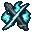
Cross Sever
- คูลดาวน์
5.8 วิ→ 4.7 วิ · ดาเมจต่อครั้ง69.7%→ 56.5% (-19%)
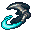
Soul Scythe Throw
- คูลดาวน์
6.7 วิ→ 5.3 วิ · ดาเมจต่อครั้ง103.0%→ 81.5% (-21%)
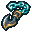
Chain Reap
- คูลดาวน์
8.3 วิ→ 6.7 วิ · ดาเมจต่อครั้ง255.3%→ 206.1% (-19%)
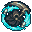
Harvest Spin
- คูลดาวน์
9.2 วิ→ 7.3 วิ · ดาเมจต่อครั้ง31.4%→ 24.9% (-21%)
Dark Siphon
- คูลดาวน์
9.2 วิ→ 7.3 วิ · ดาเมจต่อครั้ง26.5%→ 21.0% (-21%)
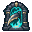
Death's Door
- คูลดาวน์
10 วิ→ 8 วิ · ดาเมจต่อครั้ง192.2%→ 153.8% (-20%)
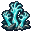
Phantom Grasp
- คูลดาวน์
10 วิ→ 8 วิ · ดาเมจต่อครั้ง341.7%→ 273.4% (-20%)
Veil of Night
- คูลดาวน์
14.2 วิ→ 11.3 วิ · ดาเมจต่อครั้ง36.4%→ 29.0% (-20%)
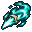
Moon Shard
- คูลดาวน์
3.3 วิ→ 3 วิ · ดาเมจต่อครั้ง84.6%→ 76.9% (-9%)
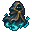
Wraith Form
- คูลดาวน์
18.3 วิ→ 14.7 วิ
ไอเท็ม & อุปกรณ์
- Reforge Tidebound ขึ้น T11 / T12 แล้วยังเป็น Tidebound · ฐานดีกว่า 10% · ชิ้น Tide ที่ตีขึ้นไปแล้วเปลี่ยนกลับเป็น Tide ให้เอง
- Soul Affix มี T1–T8 (T7–T8 ได้จาก Hone)
- แหวนบอสมี MATK · วิญญาณไททัน / Warlord เทรดได้
- ยาคลาส 2 ปรุงได้: อีลิกเซอร์คลื่นทะเล HP 4,000 · อีเทอร์คลื่นทะเล MP 900 · อีลิกเซอร์ห้วงลึก HP 6,000 · อีเทอร์ห้วงลึก MP 1,300
- ของทองคำจาก Gathering · Binder Pack โตตามเลเวล · ตู้ Gold ไม่จำกัดต่อวัน · ตลาดโลกตั้งราคาเกิน 1,000M ได้
- ปีกร้านเพชร 10 แบบวาดใหม่ · ปีกอยู่กลางหลังทุกมุม · แก้ตำแหน่งออร่าใน 5 ชุด
Pet
- ระดับใหม่ Mythic 3 ตัว (ดาเมจ / แทงค์ / เวท)
- อัปเกรด Pet +1 ถึง +10 ด้วย Pet Token
- ปุ่มสุ่ม Pet ออโต้
ระบบ & ประสิทธิภาพ
- AUTO กดสกิลตามลำดับช่องบนแถบลัด — เรียงช่องลัดตาม Combo Link ได้ผลกับออโต้แล้ว
- เกมใช้หน่วยความจำน้อยลงมาก แก้ iPhone เด้งและอาการกระตุก
- แสงเงา การวาดตัวละคร และเอฟเฟกต์สกิลเบาลง ลื่นขึ้นในที่คนเยอะ · มือถือแสดงเอฟเฟกต์สกิลคนอื่นแบบเบา


 Lanternwake MatronLv 104 · Ricewater Shrine · ★★
Lanternwake MatronLv 104 · Ricewater Shrine · ★★ Coralhorn BastionLv 106 · Coralhorn Shelf · ★★
Coralhorn BastionLv 106 · Coralhorn Shelf · ★★ Drowned MagistrateLv 108 · Magistrate's Basin · ★★★★
Drowned MagistrateLv 108 · Magistrate's Basin · ★★★★ Railstorm WyrmLv 110 · Thunderline Depot · ★★★
Railstorm WyrmLv 110 · Thunderline Depot · ★★★ Spinefall LeviathanLv 126 · Marrowfall Gorge · ★★★★★
Spinefall LeviathanLv 126 · Marrowfall Gorge · ★★★★★ Mirrortide LocketMirrortide Siren (Field Boss)
Mirrortide LocketMirrortide Siren (Field Boss) Bastion of the BoundPearlheart Titan (World Boss) · DEF 246
Bastion of the BoundPearlheart Titan (World Boss) · DEF 246 Crown of Quiet StarsPearlheart Titan (World Boss) · DEF 99
Crown of Quiet StarsPearlheart Titan (World Boss) · DEF 99